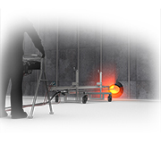
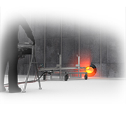
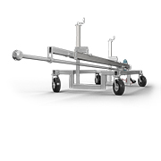
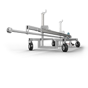
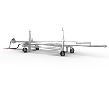
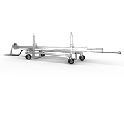

 

 

BFW-100
Designed for online boiler cleaning, contractors can reduce down time by cleaning at high temperatures. With a 300 gpm (1140 l/min) flow capability, the BFW-100 can effectively clean any large vessel with limited entry access.
The BFW-100 features an adjustable cart with an air-powered boom positioner and provides excellent cleaning for pulp plant boilers, refinery and chemical plant vessels, as well as furnace radiant sections.
- Temperature resistant design reduces downtime by allowing cleaning operation while online
- Remote Control Box controls linear and rotation speeds from a safe distance
- Adjustable rail and cart allows for easy tool positioning, including elevation and angle of the lance
- Cantilever option available accommodates lengths up to 24 ft (7.3 m)
- Pulp plant boilers
- Refinery and chemical plant vessels
- Furnace radiant sections
- Boiler floors
| Tool Model | BFW-100 | |
|---|---|---|
| Maximum Pressure | 10k psi | 690 bar |
| Maximum Flow | 300 gpm | 1140 l/min |
| Inlet Connection | 1 NPT | |
| Rotation Speed | 10-50 rpm | |
| Linear Speed | 8–35 ft/min | 2.4–11 m/min |
| Stroke Length | 13 ft | 4.0 m |
Our expert staff is available Monday through Friday 8AM - 5PM MST to answer questions and offer advice on your toughest cleaning applications.